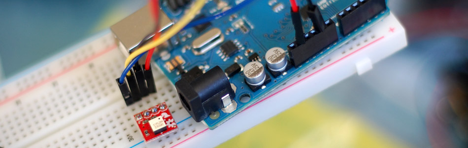

Tilt Sensing with the RPI-1031 + Arduino

Once in a while something comes out that I think is going to be really awesome, but when you get it, it is just so so. Im sure you all know what I mean... But yeah... This is one of those.
The RPI-1031 available from sparkfun is a pretty simple (heck, it is dead simple) sensor for sensing when it is tilted. And it does this really well. But it seriously only does that. If it is not tilted, it freaks out and reports tilt anyways.
It actually just uses a metal ball that rolls around inside (you can hear it moving around when you tip it). Because of how it is made, the ball is always up against one side even when it is flat. Unfortunately this means you can never know the difference between a reading, and it being flat, only changes in reading.
Hooking it up
This is as simple as it gets I guess. Just power and ground, then connect the 2 digital pins and you are done. These 2 digital pins will output LOW/LOW, LOW/HIGH, HIGH/LOW and HIGH/HIGH depending on the wall it is touching. Again, even if it is flat, it is still touching a wall.
Code
The code for this guy is really simple, it just checks 2 pins, to see what side is being touched - The simple function just takes the 2 digital outputs and returns 0,1,2 or 3 depending on the side.
{kind=link}
//For the RPI-1031 - http://www.sparkfun.com/products/10621 int tilt_s1 = 2; int tilt_s2 = 3; void setup(){ pinMode(tilt_s1, INPUT); pinMode(tilt_s2, INPUT); Serial.begin(9600); } void loop(){ int position = getTiltPos(); Serial.println(position); delay(200); //only here to slow down the serial output } int getTiltPosition(){ int s1 = digitalRead(tilt_s1); int s2 = digitalRead(tilt_s2); return (s1 << 1) | s2; //bitwise math to combine the values }
Article taken from bildr.org with minor changes - I am the original author of this content